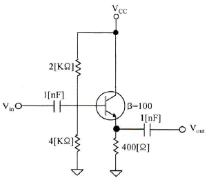
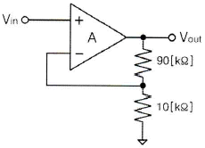
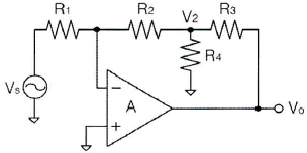
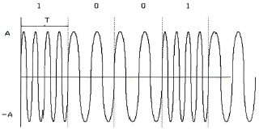
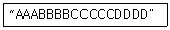
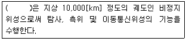

방송통신기사 (2016-10-01 기출문제)
1과목: 디지털 전자회로
1. 60[Hz]의 정현파 신호가 전파정류기에 입력될 경우 출력신호의 주파수는 얼마인가?
- 10[Hz]
- 30[Hz]
- 60[Hz]
- 120[Hz]
(정답률: 74%)

2. 변압기의 입력단 1차 권선비와 출력단 2차 권선비가 1:2일 때, 출력전압은 입력전압의 몇 배인가?
- 0.5배
- 1배
- 1.5배
- 2배
(정답률: 63%)
3. 스위칭 정전압 제어기에서 제어 트랜지스터가 도통되는 시간은?
- 부하 변동에 대응하는 펄스 유지 기간 동안
- 항상
- 과부하가 걸린 동안
- 전압이 정해진 제한을 넘은 동안
(정답률: 63%)
4. 다음과 같은 증폭기의 교류 입력전압의 크기가 20[mV]일 때 교류 출력전압의 크기는 약 얼마인가?

- 20[mV]
- 30[mV]
- 40[mV]
- 50[mV]
(정답률: 40%)
5. 다음 중 FET(Field Effect Transistor)에 대한 설명으로 틀린 것은?
- 입력저항이 수 [MΩ]으로 매우 크다.
- 다수 캐리어에 의해 동작하는 단극성 소자이다.
- 접합트랜지스터(BJT)보다 동작속도가 빠르다.
- 전압제어용 소자이다.
(정답률: 60%)
6. 다음 그림과 같은 부궤환 증폭기 회로의 궤환율은?

- 10
- 1.1
- 0.5
- 0.1
(정답률: 56%)
7. 다음 그림과 같은 연산증폭 회로의 전압이득(Vo/Vs)은? (단, 증폭기는 이상적이라고 가정하며, R1=R2=R3=30[kΩ], R4=2[kΩ]이다.)

- -14
- -17
- -20
- -23
(정답률: 55%)
8. 발진기에서 기본 증폭기의 전압증폭도가 A이고, 궤환율을 β라고 했을 때 발진이 발생되는 조건은?
- A=100, β=1
- A=100, β=0.1
- A=100, β=0.01
- A=100, β=0
(정답률: 65%)
9. RC 발진회로에서 RC 시정수를 높게 할 경우 발진주파수는 어떻게 변하는가?
- 발진주파수가 높아진다.
- 발진주파수가 낮아진다.
- 무한대가 된다.
- 아무런 변화가 없다.
(정답률: 55%)
10. 400[Hz]의 정현파 변조신호로 주파수 변조를 하였을 때 변조지수가 50이었다. 이 때 최대주파수편이 Δf는 얼마인가?
- 20[kHz]
- 40[kHz]
- 80[kHz]
- 100[kHz]
(정답률: 38%)
11. FM 검파 방식 중 주파수 변화에 의한 전압 제어 발진기의 제어 신호를 이용하여 복조하는 방식은?
- 계수형 검파기
- PLL형 검파기
- 포스터-실리 검파기
- 비 검파기
(정답률: 67%)
12. 다음 중 그림과 같은 변조파형을 얻을 수 있는 변조방식에 대한 설명으로 옳은 것은?

- 정현파의 주파수에 정보를 싣는 FSK 방식으로 2가지 주파수를 이용한다.
- 정현파의 진폭에 정보를 싣는 ASK 방식으로 2가지 진폭을 이용한다.
- 정현파의 진폭에 정보를 싣는 QAM 방식으로 2가지 진폭을 이용한다.
- 정현파의 위상에 정보를 싣는 2위상 편이변조방식이다.
(정답률: 58%)
13. 비안정 멀티바이브레이터 회로에서 콜렉터 전압의 파형은?
- 구형파
- 스텝파
- 임펄스파
- 정현파
(정답률: 65%)
14. RL 회로에서 시정수는 어떻게 정의하는가?
- RL
- L/R
- R/L
- 1/(RL)
(정답률: 56%)
15. 2진수 (101101)2을 10진수로 올바르게 표시한 것은?
- 40
- 45
- 50
- 55
(정답률: 70%)
16. 그레이 코드(Gray Code) 1110을 2진수로 변환하면?
- 1110
- 1100
- 1011
- 0011
(정답률: 61%)
17. RS 플립플롭 회로의 출력 Q 및 Q'는 리셋(Reset) 상태에서 어떠한 논리값을 가지는가?
- Q = 0, Q' = 0
- Q = 1, Q' = 1
- Q = 0, Q' = 1
- Q = 1, Q' = 0
(정답률: 50%)
18. 다음 중 동기식 카운터에 대한 설명으로 옳은 것은?
- 플립플롭의 단수는 동작 속도와 무관하다.
- 논리식이 단순하고 설계가 쉽다.
- 전단의 출력이 다음 단의 트리거 입력이 된다.
- 동영상 회로에 많이 사용된다.
(정답률: 44%)
19. 지연 시간 50[ns]의 플립플롭을 사용한 5단 리플 카운터의 동작 최고 주파수는?
- 1[MHz]
- 4[MHz]
- 10[MHz]
- 20[MHz]
(정답률: 43%)
20. 조합 논리 회로 중 0과 1의 조합으로 부호화를 행하는 회로로 2n개의 입력선과 n개의 출력선으로 구성된 것은?
- 디코더(Decoder)
- DEMUX
- MUX
- 인코더(Encoder)
(정답률: 66%)
2과목: 방송통신 기기
21. 다음 중 위성중계 시스템 운용에 대하여 숙지해야 될 필요 사항으로 잘못된 것은?
- 프라임 포커스 안테나는 급전방향과 방사축 방향이 상이한 타입으로 되어 있어 불요방사나 이득저하가 생기지 않는다.
- 국내 위성중계시스템의 운용주파수는 Ku밴드(12/14[GHz])로서, 높은 주파수를 사용하는 관계로 Rain Fall 현상을 염두에 두어야 한다.
- Audio와 Video 사이에 Delay Time이 발생하기 때문에 반드시 Lip Sync 장치가 별도로 필요하다.
- IF 주파수는 변동사용이 가능하도록 흔히 4개(57, 63, 69, 75.5[MHz]) 정도가 있다.
(정답률: 61%)
22. 다음 중 방송국 조명 관련 장비로써 광(光)량을 조절하는 장치는?
- 급전설비
- 현가설비
- 통신설비
- 디머(Dimmer)
(정답률: 90%)
23. 방송용 편집 장비 중 편집기에 대한 설명으로 옳은 것은?
- 비선형 편집기는 컴퓨터 기술을 이용하여 영상신호를 디스크에 저장하여 랜덤하게 편집하는 편집기이다.
- 일반 TAPE용 VCR도 비선형 편집기에 속한다.
- 두 대의 VCR로 연속적으로 편집하는 장비를 비선형 편집기라 한다.
- 디지털 편집으로 MPEG-2로 저장 후 편집하는 것을 선형 편집기라 한다.
(정답률: 63%)
24. 지상으로부터 전파를 수신하여 주파수를 변환한 다음 증폭해서 다시 지상으로 송신하는 위성은?
- 수동위성
- 능동위성
- 제어위성
- 추적위성
(정답률: 81%)
25. 다음 중 아날로그 신호에서 디지털 신호로 변환시 주요 과정이 아닌 것은?
- 표본화
- 복호화
- 양자화
- 부호화
(정답률: 86%)
26. 다음 중 다이나믹형 마이크의 특징과 가장 거리가 먼 것은?
- 튼튼하고 동작이 안정되어 있다.
- 마이크 자체가 발진기능을 갖고 있어 전원이 불필요하다.
- 취급이 비교적 간단하다.
- 비교적 값이 매우 고가이다.
(정답률: 68%)
27. 전파의 속도는 매질에 관하여 무엇에 의해 변화되는가?
- 유전율과 밀도
- 밀도와 투자율
- 도전율과 유전율
- 유전율과 투자율
(정답률: 71%)
28. 다음 중 휘도신호의 차에 따라서 키(Key)를 뽑는 것은 무엇인가?
- 크로마키(Chroma Key)
- 매트키(Matte Key)
- 리니어키(Linear Key)
- 루미넌스키(Luminance Key)
(정답률: 75%)
29. VTR을 재생할 때 화면이 흔들리지 않도록 보정해주는 방송장비는?
- FS
- ADC
- DVD
- TBC
(정답률: 63%)
30. 다음 중 위성방송 수신용 안테나로 이용하는 파라볼라 안테나에 관한 설명으로 맞는 것은?
- 구면의 초점에 1차 방사기가 놓인다.
- 전력 반치각이 넓으므로 수신 이득이 낮다.
- 반사면에 눈이 쌓이면 C/N비가 높아지므로 눈이 쌓이지 않도록 한다.
- 같은 크기의 센터 피드 안테나보다 효율이 낮다.
(정답률: 54%)
31. 다음 중 위성의 궤도에 따른 분류 방법이 아닌 것은?
- 중궤도 위성
- 고궤도 위성
- 저궤도 위성
- 자유궤도 위성
(정답률: 89%)
32. 유선방송(CATV)에서 전송분배계의 구성방법에 영향을 미치는 요소가 아닌 것은?
- CATV 시스템의 규모
- CATV 시스템의 적용 대상
- 헤드앤드의 위치
- 프로그램의 재송출
(정답률: 76%)
33. 유선방송(CATV)에서 중계 회선의 주요 용도가 아닌 것은?
- 재송신 신호 수신점과 헤드 앤드간의 전송
- 스튜디오와 헤드 앤드간의 전송
- 스튜디오와 주조정실간의 전송
- 헤드 앤드와 헤드 앤드간의 전송
(정답률: 63%)
34. 다음 중 AM 광 송신기(옥내용)에 대한 설명으로 옳지 않은 것은?
- 구성으로는 차단스위치, 레이져 모듈, 상태표시기와 조정기 등으로 구성된다.
- 하향 광 송신기는 고효율 스위칭 조절 공급기로 과전류로부터 보호된다.
- 상향 광 송신기는 RF신호를 광선로로 전송할 수 있는 광신호로 변환한다.
- 광검출기는 광대역 RF변환기로서 광섬유로 입력된 광신호는 광대역 RF신호를 형성하여 광다이오드에 입력된다.
(정답률: 58%)
35. 다음 중 국내 지상파 DMB의 방송서비스 표준안의 기본이 되었던 것은?
- Eureka-147
- ATSC
- DVB-T
- IBOC
(정답률: 79%)
36. 다음 중 우리나라 지상파 DMB 전송방식으로 옳은 것은?
- DQPSK 변조, COFDM
- QAM 변조, COFDM
- DQPSK 변조, ATSC
- ASK 변조, ISBD-TSB
(정답률: 79%)
37. 다음 중 음향신호 모니터 장치가 아닌 것은?
- VU Meter
- PPM Meter
- Loudness Meter
- AU Meter
(정답률: 58%)
38. 다음 중 컬러바(Color Bar)와 같은 정밀하고 반복된 신호를 만들어서 시험과 조정 절차를 위해 사용되는 것은?
- TV 팬턴신호 발생기
- 웨이브폼 모니터
- 벡터스코프
- 스펙트럼 아날라이저
(정답률: 78%)
39. 다음 중 스튜디오에서 사용되는 제작 설비가 아닌 것은?
- VTR
- FSS
- CG
- STL
(정답률: 74%)
40. 다음 중 ATSC 방식의 DTV 송신기의 구성요소가 아닌 것은?
- R/S Encoder
- CIN Diplexer
- Data Interleaver
- Trellis Encoder
(정답률: 71%)
3과목: 방송미디어 공학
41. FM 송수신단에서 음성신호의 처리를 위해 프리엠퍼시스와 디엠퍼시스 회로를 채택하는 주된 이유는?
- 선택도를 개선하기 위해
- 신호대잡음비를 개선하기 위해
- 혼변조를 감소시키기 위해
- 미분이득을 개선하기 위해
(정답률: 81%)
42. 다음 중 케이블 텔레비전의 특징으로 알맞은 것은?
- 지상파 방송을 수신할 수 없는 난시청 지역에서는 서비스가 안된다.
- 지상파 텔레비전에 비해 제공할 수 있는 채널의 수가 적다.
- 가입자의 의사전달이 안 되어 단방향 서비스만 가능하다.
- 시청자의 정보욕구를 충족시킬 수 있는 전문채널이 가능하다.
(정답률: 82%)
43. 다음 중 디지털 방송의 도입효과에 속하지 않는 사항은?
- 지상파 TV의 영향력 증가
- 다채널화
- 고화질ㆍ고음질의 방송
- 시청자 세분화 전략
(정답률: 79%)
44. 잔향이 많은 실내에서 명료도를 높이는 방법이 아닌 것은?
- 실내의 잔향 시간을 짧게 한다.
- 실내의 임계거리가 길어지도록 한다.
- 스피커의 지향성이 좁은 것을 사용한다.
- 스피커를 여러 개 조합하여 사용한다.
(정답률: 76%)
45. 여러 음원이 존재할 때 인간은 자신이 듣고 싶은 음을 선별해서 들을 수 있는 능력을 갖는다. 이런 음향효과를 무엇이라고 부른가?
- 칵테일 파티 효과
- 하스 효과
- 마스킹 효과
- 바이노럴 효과
(정답률: 83%)
46. 다음의 카메라 Shot 중 전경(全景)을 찍기 위한 Shot으로 가장 적절한 것은?
- Full Shot
- Pull Figure
- Up Figure
- Close-Up Shot
(정답률: 89%)
47. 방송용 카메라의 화상 장애 현상 중 렌즈 앞에 부착된 후드(Hood)나 필터(Filter)의 크기가 부적당하여 사용렌즈의 화각에 걸리거나 화상이 전체적으로 또는 모서리 부분이 어두워지는 현상을 지칭하는 용어로 가장 적절한 것은?
- 플레어(Flare)
- 색수차
- 비네팅(Vignetting)
- 구수면차
(정답률: 87%)
48. 조명기구를 매다는 것을 목적으로 하는 현가장치의 방식에 속하지 않은 것은?
- 그리드 방식
- 슬라이드 레일방식
- 배턴방식
- 로터리 스위치 방식
(정답률: 71%)
49. 다음 중 직사광에 해당하는 빛을 내며 빛의 방향성, 명암이나 그림자에 의한 입체감 등을 표현하기 위한 조명기구로 가장 적절한 것은?
- 스포트 라이트(Spot Light)
- 플러드 라이트(Flood Light)
- 베이스 라이트(Base Light)
- 이펙트 라이트(Effect Light)
(정답률: 84%)
50. 다음 중 일반적인 방송용 아날로그 무선 마이크시스템에 관한 설명으로 틀린 것은?
- 무선 마이크는 자유로이 움직일 수 있는 편리함 때문에 많이 사용한다.
- 무선 마이크는 간단한 수신기 회로를 내장하고 있다.
- 송신 주파수대는 VHF 혹은 UHF대역을 사용한다.
- 무선 마이크가 전파를 발사하면 이를 가까운 곳에 있는 수신기로 수신하여 음성신호 출력을 뽑아내는 방법을 사용한다.
(정답률: 75%)
51. 다음 중 아날로그 방송과 비교한 디지털 지상파 방송의 특징과 가장 거리가 먼 것은?
- 화질 및 음질의 향상
- 다채널화
- 데이터방송 서비스
- 높은 송신 전력
(정답률: 86%)
52. 주어진 이미지의 각 픽셀들이 가지는 밝기 값의 분포 상황을 나타내는 것을 무엇이라 하는가?
- 이미지 히스토그램
- 포인트 프로세싱
- 균일화(Equalization)
- 솔라이징(Solarizing)
(정답률: 80%)
53. 아날로그 오디오의 샘플링 주파수를 44[khz], 양자화 비트를 10비트로 할 경우, 30초간 샘플링했을 때 저장해야 하는 오디오 데이터 용량은 얼마인가?
- 13,200,000[byte]
- 1,650,000[byte]
- 825,000[byte]
- 44,000[byte]
(정답률: 75%)
54. 다음의 문자열을 무손실 압축했을 경우, 가능한 압축률은 얼마인가?

- 1/2
- 1/3
- 1/4
- 1/5
(정답률: 89%)
55. 다음 중 UHD 방송과 거리가 먼 것은?
- 해상도 : 3840×2160
- MPEG-H 오디오
- 해상도 : 1920×1080
- HEVC
(정답률: 84%)
56. 다음 중 멀티미디어 데이터를 활용한 대화형 텔레비전시스템을 구성하기 위하여 가정의 텔레비전에 부착하는 장치는?
- 셋톱박스
- 미디어 서버
- 지역 통합 노드
- 트랜스포트 네트워크
(정답률: 89%)
57. AC-3 비트 스트림 중 동기 정보를 나타내는 것은 무엇인가?
- BSI
- SI
- AB
- CRC
(정답률: 80%)
58. MPEG-2의 기본개념 중 서로 다른 미디어나 다른 플랫폼 등과의 정보교환 가능성을 지칭하는 것은?
- Backup
- Interoperability
- Scalability
- Extensibility
(정답률: 85%)
59. 영상신호 압축의 원리는 영상신호에 내재되어 있는 각종 중복성을 제거하는 것이다. 다음 중 영상신호 압축을 위한 주요 제거요소로 가장 거리가 먼 것은?
- 색신호간 중복성 제거
- 공간적 중복성 제거
- 시간적 중복성 제거
- 방송 채널간 중복성 제거
(정답률: 74%)
60. 다음 중 가변길이 부호는?
- 그레이 코드
- 허프만 코드
- 해밍 코드
- 3초과 코드
(정답률: 69%)
4과목: 방송통신 시스템
61. 주파수 영역에서 신호의 스펙트럼이 겹쳐서 원 신호의 정상 복원이 불가능해지는 것을 무엇이라고 하는가?
- 수신기 비트에러
- 수신기 잡음
- 산탄잡음
- 에일리어싱
(정답률: 86%)
62. 다음 중 아날로그 변조방식이 아닌 것은?
- 주파수변조방식
- 위상변조방식
- 펄스변조방식
- 진폭변조방식
(정답률: 73%)
63. 다음 중 디지털방송시스템의 특징이 아닌 것은?
- 방송의 다채널
- 방송의 고품질
- 수신기 복조과정에서 오류정정 불가능
- 방송의 스크램블화로 수신제한 가능
(정답률: 89%)
64. 526.5[khz] ~ 1,606.5[khz]대의 중파방송(AM)은 총 몇 개의 채널을 할당할 수 있는가?
- 80개
- 120개
- 54개
- 36개
(정답률: 86%)
65. 다음 중 점유대역폭에 따라 규정하고 있는 FM송신기의 최대 주파수 편이는?
- ±50[khz]
- ±70[khz]
- ±75[khz]
- ±85[khz]
(정답률: 85%)
66. AM 스테레오 방송을 구현하는 방법의 종류가 아닌 것은?
- 모토롤라 방식(AM-AM)
- 칸 방식(AM/PM)
- 해리스 방식(AM/AM)
- 마르카티니 방식(AM/FM)
(정답률: 64%)
67. 다음 중 서로 다른 장소에 설치된 연주소와 송신소 간, 프로그램 전송에 사용되는 마이크로파대의 연결회선은?
- STL
- FPU
- TRC
- 단말회선
(정답률: 82%)
68. ATSC 방식의 특징이 아닌 것은?
- MPEG-2 비디오 표준
- AC-3 표준
- MPEG-3 시스템 표준
- 8-VSB
(정답률: 65%)
69. 다음 중 지상파 텔레비전의 전파를 방사하는 설비를 송신설비라 하는데 이에 포함되지 않는 것은?
- 영상, 음성 송신기
- FSS 송신장치
- 잔류측파대 필터
- 다이플렉서
(정답률: 55%)
70. 다음 중 국내 케이블 TV의 사용주파수로 옳은 것은?
- 47[Mhz]~470[Mhz]
- 5.75[Mhz]~750[Mhz]
- 108[Mhz]~360[Mhz]
- 5.75[Mhz]~1,002[Mhz]
(정답률: 67%)
71. 광섬유 케이블의 전송특성은 광섬유 손실과 밀접한 관계가 있다. 다음 중 광섬유 손실에 해당하지 않는 것은?
- 산란손실
- 흡수손실
- 접속손실
- 차폐손실
(정답률: 79%)
72. 다음 중 양방향 종합유선방송(CATV) 시스템의 네트워크 보전 및 관리사항에 대한 설명으로 옳지 않은 것은?
- 유선전송시스템에 사용되는 증폭기의 커넥터 부분은 열수축관으로 설치한다.
- 연장증폭기는 습기와는 관계가 없으므로 접지를 하지 않아도 무관하다.
- 탭 오프(Tap Off)단자가 빈 가입자의 단자일 경우에는 반드시 종단기(Terminator)를 삽입하여야한다.
- 간선분기 증폭기와 연결되는 동축케이블은 여장을 두어서 열의 팽창과 수축에 대비하여야 한다.
(정답률: 86%)
73. 다음 중 위성방송에서 전파손실의 가장 큰 원인으로 적합한 것은?
- 자유공간 손실
- 감쇠와 흡수
- 산란과 회절
- 다중경로 손실
(정답률: 87%)
74. 다음 중 디지털 위성방송의 MPEG-2 PSI에 대한 4가지 테이블 유형 외에 부가정보에 대한 설명으로 잘못된 것은?
- SDT(Service Description Table) : 시스템 서비스들에 대한 정보(서비스 이름, 서비스 제공자)를 가지고 있다.
- RST(Running Status Table) : 한 이벤트의 상태(Running/Not Running)를 나타내 준다.
- TOT(Time Offset Table) : 한국명으로 미사용 상태이며, 현지시간 옵셋과 현재 시간과 날짜에 관한 정보를 제공한다.
- ST(Stuffing Table) : 존재하는 섹션들을 유효화시키는데 사용한다.
(정답률: 68%)
75. 다음 괄호 안에 들어갈 용어로 적절한 것은?

- 저궤도 위성
- 중궤도 위성
- 고궤도 위성
- 극궤도 위성
(정답률: 82%)
76. 지상파 DMB에서 사용하는 QPSK 변조방식은 하나의 부호에 몇 개의 비트가 할당되는가?
- 2
- 4
- 16
- 64
(정답률: 75%)
77. 우리나라 지상파DMB 전송시스템의 오류분산에서 고속정보채널(Fast Information Channel)에 사용하는 방식은 무엇인가?
- 시간인터리빙
- 주파수인터리빙
- 길쌈부호
- CRC
(정답률: 66%)
78. 중계방송 중 생방송의 중계 전송수단으로 옳지 않은 것은?
- Twist Pair 전송방식
- 마이크로웨이브 전송방식
- SNG 전송방식
- 광케이블 전송방식
(정답률: 68%)
79. 낙뢰나 전력설비의 누설에 의한 옥외의 선로 계통에 생긴 이상전압의 진입을 막고 옥내의 전력 계통으로부터 누설된 전력이 CATV 시설로 유출되는 것을 방지하기 위해 보안기를 설치한다. 보안기 설치 위치가 맞는 것은?
- CATV의 내선설비와 가입자댁내 설비 사이
- CATV의 외선실비와 가입자댁내 설비 사이
- CATV의 외선설비와 CATV의 내선설비 사이
- CATV의 전원공급기
(정답률: 76%)
80. 방송 송출신호를 전송하는 PCM시스템에서 ISI를 측정하기 위해 아이패턴(Eye Pattern)을 이용하는데, 여기서 눈을 뜬 상하의 높이가 의미하는 것은?
- 시스템 감도
- 잡음에 대한 여유도
- 시간오차에 대한 민감도
- 최적의 샘플링 순간
(정답률: 68%)
5과목: 전자계산기 일반 및 방송설비기준
81. 다음 중 IP 주소를 사용하여 동종 또는 이종 링크에 다중 접속을 실현할 수 있는 것은?
- Roaming
- Multihoming
- Hand-Off
- Uni-Casting
(정답률: 77%)
82. 다음 중 자외선을 이용하여 지울 수 있는 메모리는 어느 것인가?
- PROM
- EPROM
- EEPROM
- Flash Memory
(정답률: 81%)
83. 컴퓨터가 8비트 정수 표현을 사용할 경우 -25를 부호와 2의 보수로 올바르게 표현한 것은?
- 11100111
- 11100011
- 01100111
- 01100011
(정답률: 56%)
84. 다음 중 2진수 덧셈연산에서 오버플로우(Overflow)가 되는 조건은?
- 두 수에서 부호 자리의 값이 서로 같을 때이다.
- 두 수에서 부호 자리의 값이 서로 다를 때이다.
- 부호자리에서 캐리(Carry)가 있고, 부호 다음자리(MSB)가 캐리(Carry)가 있을 때이다.
- 부호자리에서 캐리(Carry)가 있고, 부호 다음자리(MSB)가 캐리(Carry)가 없을 때이다.
(정답률: 58%)
85. 메모리관리에서 빈 공간을 관리하는 Free 리스트를 끝까지 탐색하여 요구되는 크기보다 더 크되, 그 차이가 제일 작은 노드를 찾아 할당해주는 방법은?
- 최초적합(First-Fit)
- 최적적합(Best-Fit)
- 최악적합(Worst-Fit)
- 최후적합(Last-Fit)
(정답률: 86%)
86. 다음 중 컴퓨터의 운영체제에서 로더(Loader)의 주요 기능이 아닌 것은?
- 프로그램과 프로그램 간의 연결(Linking)을 수행한다.
- 출력 데이터에 대해 일시 저장(Spooling) 기능을 수행한다.
- 프로그램이 실행될 수 있도록 번지수를 재배치(Relocation)한다.
- 프로그램 또는 데이터가 저장될 번지수를 계산하고 할당(Allocation)한다.
(정답률: 70%)
87. 몇 개의 관련 있는 데이터 파일을 조직적으로 작성하여 중복된 데이터 항목을 제거한 구조를 무엇이라 하는가?
- Data File
- Data Base
- Data Program
- Data Link
(정답률: 72%)
88. 다음 중 컴파일러(Compiler)에 대한 설명으로 옳은 것은?
- 고급(High Level) 언어를 기계어로 번역하는 언어번역 프로그램이다.
- 일정한 기호형태를 기계어와 일대일로 대응시키는 언어번역 프로그램이다.
- 시스템이 취급하는 여러 가지의 데이터를 표준적인 방법으로 총괄하는 프로그램이다.
- 프로그램과 프로그램 간에 주어진 요소(Factor)들을 서로 연계시켜 하나로 결합하는 기능을 수행하는 프로그램이다.
(정답률: 68%)
89. 다음 중 RISC(Reduced Instruction Set Computer)에 대한 설명으로 틀린 것은?
- CISC(Complex Instruction Set Computer)는 RISC보다 많은 양의 레지스터를 필요로 한다.
- 명령어의 길이가 일정하다.
- 대부분의 명령어들은 한 개의 클럭 사이클로 처리된다.
- 소수의 주소 기법(Addressing Mode)을 사용한다.
(정답률: 61%)
90. 인터럽트의 우선순위를 바르게 나열한 것은?
- 전원 이상 → 기계착오 → 외부 신호 → 입ㆍ출력 → 명령의 잘못 사용 → 슈퍼바이저 호출(SVC)
- 슈퍼바이저 호출(SVC) → 전원 이상 → 기계착오 → 외부 신호 → 입ㆍ출력 → 명령의 잘못 사용
- 슈퍼바이저 호출(SVC) → 입ㆍ출력 → 외부 신호 → 기계착오 → 전원 이상 → 명령의 잘못 사용
- 기계착오 → 외부 신호 → 입ㆍ출력 → 명령의 잘못 사용 → 전원 이상 → 슈퍼바이저호출(SVC)
(정답률: 76%)
91. 입력신호 에너지를 2개 이상으로 균등하게 분배하는 장치는?
- 분사기
- 분압기
- 분기기
- 분배기
(정답률: 82%)
92. 다음 중 주전송장치에 대한 설명으로 적합한 것은?
- 유선방송국설비와 전송선로설비를 말한다
- 유선방송국에서 텔레비전 방송신호를 수신하기 위한 안테나 및 증폭장치 등을 말한다
- 유선방송신호를 증폭ㆍ조정ㆍ변환 및 혼합하여 선로에 전송하는 장치와 이에 부가된 장치를 말한다
- 분배기 및 분기기 등에 의한 상ㆍ하향 신호의 전송손실을 보상하기 위하여 사용하는 장치를 말한다
(정답률: 78%)
93. 다음 중 방송의 공정성과 공익성에 대한 설명으로 옳지 않은 것은?
- 방송에 의한 보도는 공정하고 객관적이어야 한다.
- 방송은 표준말 보급에 이바지하여야 하며 언어순환에 힘써야 한다.
- 방송은 국민의 알 권리와 표현의 자유를 보호ㆍ신장하여야 한다.
- 방송은 소수집단이나 특정단체에게 이익을 충실하게 반영하도록 노력하여야 한다
(정답률: 83%)
94. 다음 중 전송망 사업등록 신청 시 미래창조과학부장관에게 첨부하여 제출할 서류가 아닌 것은?
- 등록신청서
- 자본금
- 기술인력 현황
- 방송위원회 추천서
(정답률: 71%)
95. 방송법에서 정의하는 “영상ㆍ비디오 등 영상물이 방송프로그램으로 제작되어 방송매체별로 다단계로 유통ㆍ활용 또는 수출될 수 있도록 지원할 수 있는 자”는 누구인가?
- 고용노동부장관
- 문화체육관광부장관
- 미래창조과학부장관
- 대통령
(정답률: 72%)
96. 다음 중 무선국 허가의 유효 기간에 맞지 않는 것은?
- 실험국, 실용화시험국 : 1년
- 해안지구국, 이동지구국 : 5년
- 기지국, 중계국 : 5년
- 아마추어국, 무선측위국 : 3년
(정답률: 71%)
97. 방송국의 허가를 받은 자는 방송국 운용개시 후 몇 개월 이내에 방송구역 전계강도실측자료를 미래창조과학부장관에게 제출하여야 하는가?
- 1개월
- 2개월
- 3개월
- 4개월
(정답률: 77%)
98. 다음 중 전파법상의 '위성방송업무'란?
- 공중이 직접 수신하도록 할 목적으로 인공위성의 송신설비를 이용하여 송신하는 무선통신업무
- 공중이 간접 수신하도록 할 목적으로 인공위성의 송신설비를 이용하여 송신하는 무선통신업무
- 공중이 직접 수신하도록 할 목적으로 인공위성의 수신설비를 이용하여 송신하는 무선통신업무
- 공중이 간접 수신하도록 할 목적으로 인공위성의 수신설비를 이용하여 송신하는 무선통신업무
(정답률: 65%)
99. 종합 유선방송신호를 전송하기 위한 전송선로시설의 질적 수준 측정 항목에 포함되지 않는 것은?
- 영상반송파의 신호레벨
- 음성반송파의 주파수편차
- 혼변조도
- 채널간 영상반송파의 레벨차
(정답률: 50%)
100. 종합유선방송 구내전송선로설비의 보호기 특성에서 절연저항은 얼마인가?
- 1[MΩ] 이상
- 10[MΩ] 이상
- 100[MΩ] 이상
- 1000[MΩ] 이상
(정답률: 50%)